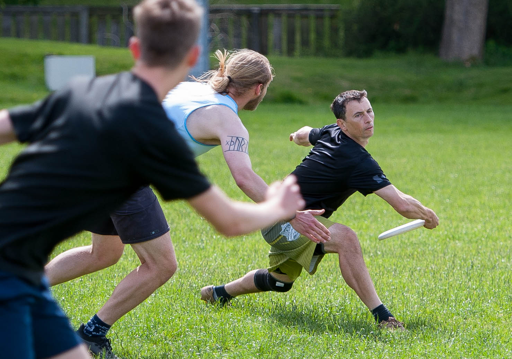

Skill Development in Ultimate
Throwing and catching skills are often undervalued in our sport and many ultimate player’s skills plateau once they have passable backhands and forehands good enough to play a role on their team.
Developing skills and game play experience should be the primary focus for new players as this is where the quickest gains can be made. Most experienced players also have a long way to go to master their skills and consistency. The off-season is a great time to develop technique, integrate new skills and build an arsenal of reliable throws.
A lot of our skill development occurs naturally via game play. However, opportunities to develop skills in matches can be limited:
Restricted time on the disc
Pressure to keep possession
Prescribed team roles

Continuing to improve your skills requires focussed and deliberate practice.
Skill focussed training drills (e.g. a break force drill)
Dedicated skill sessions (e.g. focussed throwing sessions)
Identifying skill based goals that you work on over time, keep in your mind and review regularly
10,000 hours of deliberate practice are often quoted as an estimate for the time required to develop expertise in an activity. Any sort of skill requires hours of practice to master technique, develop control and gain experience (memories) that you can draw on at will.
This guide mostly focuses on throwing and catching skills, but it is important to remember that running, turning, jumping, diving, forcing, defensive footwork and other game movements are also skills that need to be practiced and learned.
Repetition and muscle memory
Skill development is a brain-to-muscle activity. When learning a skill, the initial focus should be on technique, repetition and breaking the skill down into core components. For instance, when learning to throw a forehand, you could focus on the following:
Footwork: Set your stance and get into a balanced pivot
Grip: Check your grip is correct and the disc is held in the correct position
Release action: Use a “whipping” motion to spin the disc
Follow through: Maintain balance and “finish forward” with your throwing action
You then want to throw hundreds or even thousands of forehands, focussing on technique and making small adjustments until you can execute the throw consistently. Eventually the skill becomes a more fluid motion as muscle memory is created and the task moves from a focussed conscious effort towards subconscious execution.
Focusing on good technique is critical, otherwise you ingrain bad habits that are hard to unlearn. Consider getting help from a coach, a teammate or videoing your throws to analyse later.
Developing adaptable skills
Once you have good technique, you can develop a skill by adding variation, the sooner the better:
Distance to receiver
Pivot and release points
Moving receivers to work on timing
Throwing shape (flat, curved etc)
Before releasing a disc, your brain has to process a lot of information very quickly. It makes instinctive approximations about speed, angles, distance, height etc. Those approximations are all based on combinations of past experiences and are refined through hours of training. Your brain is a prediction machine. It is constantly taking in information from the outside world and using past information to try to predict the future. Similar to machine learning algorithms, the accuracy of these prediction models depend on having many, many data points and a dataset that accurately represents variation within the system.
Basically, experience counts. Add variation to your drills to develop your skill and become an adaptable thrower. You can’t drill every possible combination, but you can add enough variation for your brain to accurately fill in the gaps when faced with new scenarios.
EXAMPLE:
Changing the target distance every 10 throws can be better practice than 100 throws at a fixed distance.
One trademark of veteran throwers is the ability to perform micro-corrections mid way through the throwing action to adjust for imbalances in form. You might recognise the situation where your technique feels awful but you somehow get the disc to go where you wanted. This is often a sign that your brain is correcting your actions in real time to adjust for slight changes in technique.
Mastering game time skills
“My hucks are decent but I never throw them in games”
- Most developing players
It is important to realise the difference between being a good thrower and being a good passer. There are many pro disc golfers and freestylers that have undeniable skills with a disc but can’t play Ultimate at a high level.
In our sport there are multiple moving receivers and defenders that are constantly changing position and affecting the types of throws required to hit the available targets. You have to process a lot of dynamic information on the fly and also consider the weather, the dimensions of the pitch, your field position and a distracting force trying to point-block or foul you! Drills with minimal additional variables can be good for technique and development, but to get your throws game ready you must practise them in specific scenarios that replicate game like conditions.
These types of drills improve your capacity to control and adjust throws, increase spatial awareness and heighten your ability to anticipate play. They require a certain level of technique but are hugely beneficial in training your brain to see a scenario in front of you, select a throwing option and execute the required skill.
Whenever you receive the disc, you are faced with a scenario you have never seen before. You may have had many similar experiences but nothing identical. Subconsciously, you call on a collection of past experiences, assess the information in front of you, and make a quick decision about the pass you want to attempt. It’s then up to your muscle memory to execute the movements required to perform the envisaged throw, a product of training and learning your technique.
Training these game time decisions is crucial to implementing your skills in games and being able to call on the right throw at the right time. You can do this by:
Running game like drills
- Include defense, add sidelines, multiple throwing options and targets
Reactive drills
Drills where things can change every rep
- e.g. forcing direction, cutting patterns, different receiver, different throw
Small sided games
- Great for getting lots of touches in different situations
Visualisation
Visualise, execute, evaluate
Visualisation is a powerful tool for developing throws with deliberate practice.
Visualise the specific throw you want to make
Execute without thinking too much, just try to produce the desired outcome
Evaluate the outcome:
Did the result match your intention?
Did the movements feel right?
Did you maintain balance throughout the throw?
Did you get enough snap on release?
What adjustments do you need to make?
One useful drill is to throw two discs in quick succession. With the second throw, to try to either a) replicate a well executed first throw or b) correct the errors in the first throw.
Visualise game like scenarios
Even if you are only practicing with one other player, you can still imagine game-like scenarios and the throw you wish to execute. Imagine where you are on the pitch, what the defense is doing and the type of throw you want to make.
Brain training
Away from the pitch, putting yourself in game situations in your head, or replaying past scenarios is still valuable brain training.
Perfect Passing
Football coaches use the phrase “perfect passing” to describe the thought process required when moving the ball. A pass is not simply kicking the ball, or throwing the disc to a player on your team. Some of the things to think about when making the perfect pass:
The target:
Is it a pass directly to a player or out into space?
Are we aiming for the players chest, their outstretched hand or the space above them?
Throwing shape:
Flat, roll curve, IO…
What throwing shape evades defenders and fades towards the receiver?
Speed of the pass:
How fast does the disc need to go to be catchable at the target?
Does it need front edge or extra spin to float in space?
Timing of release:
- When should the pass be released to hit the receiver in full flow?
Defense and sidelines
What pivot, throw, release point do I need to beat the force?
Which defenders are in positions to block the intended throw?
What margin of error is there with sidelines and defense positioning?
Weather conditions
- How will the wind affect this throw? Do I need to adjust the angle, spin, speed etc?
All of the calculations above are performed with split-second timing (often subconsciously) with two aims in mind:
Completing a successful, catchable pass
The receivers next move i.e. continuation
EXAMPLE:
Pass: Throw to my reset
Perfect pass: Pivot low and wide around the force. Throw a leading pass backhand into the space just beyond my receiver’s right shoulder. Raise the front edge to allow the disc to float in front of them and a touch of roll curve so that the disc bends towards the receiver’s path. This will give the receiver the best opportunity to continue the swing across the field.
When running drills or practicing your throwing, you should think about the “perfect pass” for each situation and intentionally focus on specific aspects of the throw.